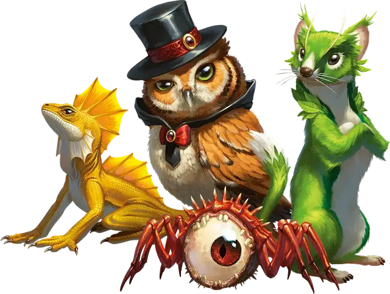

Обретение фамильяра
Find Familiar
1 уровень, Призыв

Время сотворения 1 час или Ритуал
Дистанция 10 футов
Компоненты В, С, М (горящие благовония стоимостью не менее 10 ЗМ, расходуемые заклинанием)
Длительность Мгновенная
Классы Волшебник
Вы получаете в услужение фамильяра — духа, принимающего облик выбранного вами животного: Ворона, Кошки, Крысы, Куницы, Летучей мыши, Лягушки, Осьминога, Паука, Совы, Ястреба, Ящерицы или другого Зверя с Показателем опасности 0. Появившись в незанятом пространстве в пределах дистанции, фамильяр приобретает статистику выбранного облика, а его тип вместо Зверя становится Исчадием, Небожителем или Феей (на ваш выбор). Ваш фамильяр действует независимо от вас, но повинуется вашим командам.
Телепатическая связь. Пока ваш фамильяр находится в пределах 100 футов от вас, вы можете общаться с ним телепатически. Кроме того, вы можете Бонусным действием начать видеть глазами фамильяра и слышать то же, что слышит он, до начала вашего следующего хода, получая преимущества особых чувств, которыми может обладать фамильяр.
Более того, если вы сотворяете заклинание с дистанцией «Касание», это касание может передать фамильяр. При этом ваш фамильяр должен находиться в пределах 100 футов от вас, и он передаёт такое касание при сотворении вами заклинания своей Реакцией.
Сражение. Фамильяр — союзник для вас и ваших союзников. В бою он обладает собственной Инициативой и действует в свой ход. Фамильяр не может атаковать, но может совершать другие действия как обычно.
Исчезновение фамильяра. Когда Хиты фамильяра опускаются до 0, он исчезает. Он появляется снова, когда вы вновь сотворите это заклинание. Действием Магия вы можете временно отпустить вашего фамильяра, перемещая его в карманное измерение. Пока он находится в карманном измерении, действием Магия вы можете переместить его оттуда в незанятое пространство в пределах 30 футов от вас. Вы можете также отпустить вашего фамильяра насовсем. Когда Хиты фамильяра опускаются до 0, или вы перемещаете его в карманное измерение, всё несомое и носимое фамильяром остаётся в пространстве, где он находился.
Только один фамильяр. У вас не может быть больше одного фамильяра одновременно. Если вы сотворяете это заклинание, уже имея фамильяра, вы заставляете принять его новый облик из удовлетворяющих требованиям.